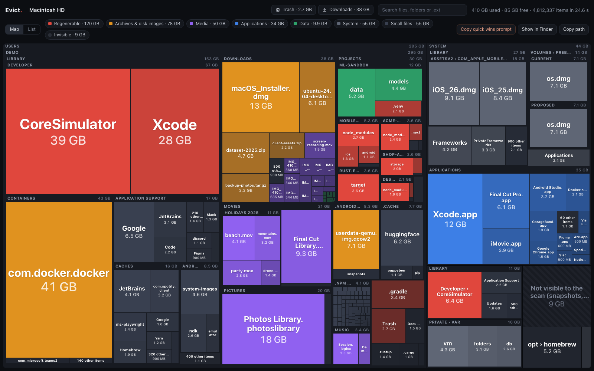
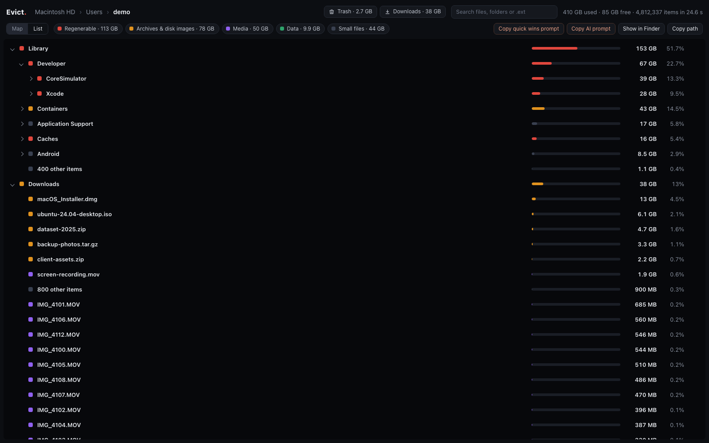

The bouncer
for your disk.
Evict scans your entire Mac in about twenty seconds and shows, as proportional boxes or a sorted list, what is really taking up space. Search it, ask Claude for quick wins, clean up.

See everything, then clean up.
A map where each box's size is the space it really takes. The biggest offenders jump out at you.
The whole disk in ~20 s
5.7 million files read on a Mac mini M4 Pro. No folder missed, nothing counted twice.
A treemap
Click to drill into a folder, use the breadcrumb to go back up. Your disk as nesting dolls.
Regenerable in red
Caches, node_modules, DerivedData, builds: what you can delete without regret stands out.
Built-in cleanup
Move to Trash, delete permanently, empty the Trash. Trash and Downloads are one click away. Admin password only when needed, system paths stay protected.
Hide what's in the way
Hide the System folder or any other to give the rest more room. Remembered across scans.
List view and search
The same folder as a tree sorted by size. ⌘F finds any file or folder, biggest first; .mov .dmg lists every video and disk image.
Ask Claude, get quick wins
What is this folder, is it safe to delete? Or a personal cleanup plan for the whole disk, biggest safe gains first. Answers stream in, paths are clickable. Nothing is ever deleted for you.
100% local
The scan never leaves your Mac: no telemetry, no dependencies, just a C scanner and an HTML page.
Always up to date
Evict checks GitHub for new versions, tells you when one is out and installs it in one click.

Fast. Really.
Same disk, same Mac: 5.7 million files, 426 GB.
Mac mini M4 Pro, internal SSD, warm cache. 27 s cold, right after a reboot.
- getattrlistbulk: name, type and size of hundreds of files in a single system call, with no
stat()per file. - openat relative to the parent: no full path is ever resolved, so threads don't fight in the kernel.
- 8 threads, measured: beyond that, APFS saturates on its locks and the scan slows down.
- No iCloud downloads: files that aren't downloaded are never fetched during the scan.
Install in a minute.
macOS 13 or later, Apple Silicon or Intel Mac.
- Download Evict.dmg, open it and drag Evict into Applications.
- First launch: Evict is signed and notarized by Apple, so it opens like any other app.
- Full Disk Access: Evict asks for it so it can scan everything. Turn it on in the settings that open.
- The scan starts on its own. Click to explore,
⌘Fto search, right-click to ask AI or delete. Evict tells you when an update is out.
git clone https://github.com/vassilidev/evict.git && cd evict && ./install.sh